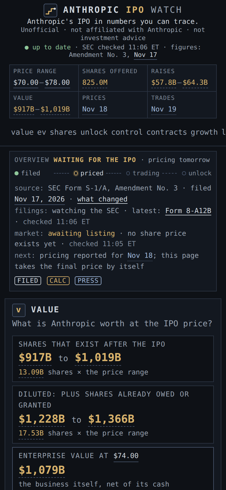
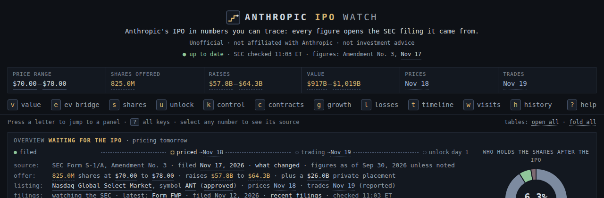

Loop 008a — Up to date, at a glance
2026-11-17 · The header now says whether the page is up to date: the time of the SEC's last check and the filing the figures come from. Version 0.8.1.
Why
Could we put at the top a "last checked", so we can see it's up to date? Right now you don't see it. You see it under filings, in the overview, but maybe we could put it in the header.
The owner's words, reworded in English.
What changed


- Four states, never more than the source said: up to date (the SEC's list was read and holds no newer prospectus); a new filing, not read yet; the last check failed; the list is unavailable. Without a watch, the filing and its date only.
- A fresh time: the page is rendered again only when what it shows changes, so the time printed in it can be old. The page's script asks
/healthevery minute for the time of the last check.
Checks
| Check | Result | Evidence |
|---|---|---|
| Unit tests, lint, types, secret scan | passed | 139, four new: one per state. |
| Real-browser tests, local and against antipo.watch | passed | 14 and 14; on a phone the enterprise value ends at 823 px of 844. |
| The script updates the time | passed | Against antipo.watch, with /health answering a check at 21:47 UTC, the header showed 16:47 ET. |
| The owner saw the screenshots before release | passed | "Yes, go!" |